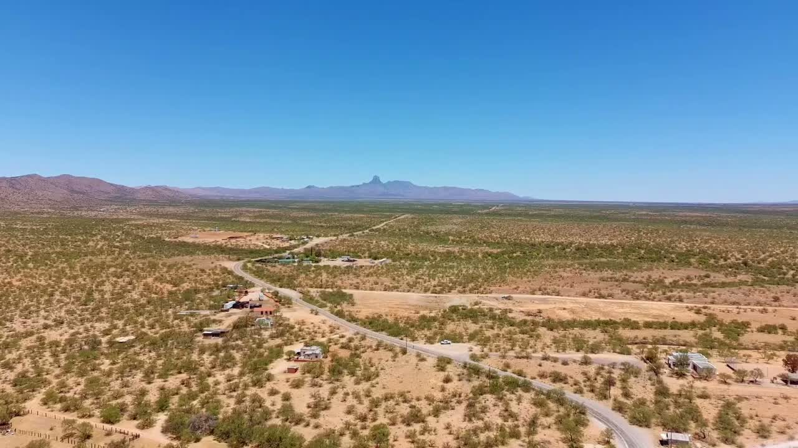

Short answer: yes, there is land for sale in Sasabe, Arizona — and it is not a normal land listing. Part of Sasabe itself is on the market as one offering: about 441.59 acres across three parcels, listed at $3,500,000.
That is what most people mean when they search for land for sale in Sasabe. There is very little land for sale here at any given time, and this offering is the big one: the town center, the historic buildings, and hundreds of acres of open land around them, sold together.
What Is For Sale
The offering is a single listing, listed July 29, 2026, made up of three parcels totaling approximately 441.59 acres in Sasabe, Arizona, in southern Pima County, right on the U.S.–Mexico border.
It includes the historic Sasabe General Store, in a building dating to around 1920, the Hill Top Bar, and the United States Post Office, with its own ZIP code, 85633. It also includes tenant-occupied residential homes — houses on the property where people currently live as tenants — and vacant land around the town center.
Sasabe is an unincorporated community, which means it has no town government of its own. It is part of Pima County, not a city or a town with a mayor and a council. State Route 286 connects it with State Route 86 near Three Points, approximately 45 miles to the north.
How Much Land, and What Kind

The 441.59 acres are ranch country and desert land around a very small town center. Sasabe sits at the end of State Route 286, past miles of open ranch country, with the Buenos Aires National Wildlife Refuge and working ranches around it. The land around the town is the same kind of country: wide open, quiet, and a long way from the nearest town of any size.
That is the honest picture. This is not a subdivision lot, and it is not a small piece of land with utilities at the street. It is a large, rural, border-country property, and a buyer needs to look at it that way.
What to Check First
Before anything else, a buyer should check the things that decide whether this land works for what they want to do with it.
Access and easements. There are border-construction easement and federal access issues on the property. A buyer should find out exactly what those cover and what they allow before making plans for the land.
Boundaries, zoning, and permitted uses. Check the acreage, the parcel boundaries, the zoning, and what the land can actually be used for. What is allowed on ranch land in unincorporated Pima County is not the same as what is allowed on a lot in town.
Utilities and buildings. The offering includes old buildings and tenant-occupied homes. Their condition, and what utilities serve which parcel, should be checked on site, not assumed from the listing.
None of this is a reason not to look. It is the reason to look carefully, with the listing agent, before deciding.
Who This Land Fits
This is not a first-lot kind of purchase. It fits a buyer who wants a large piece of historic border country and understands what comes with it: a small, living town, old buildings that need care, and a long drive to anything else.
It also fits a buyer who sees the town center for what it is — a general store, a bar, and a post office that are still part of daily life in Sasabe — and wants to keep it that way. The listing has drawn interest from buyers looking at it as a whole, including a two-person partnership that looked at it as a potential purchase.
How to See It
The best way to judge land in Sasabe is to go there. Drive State Route 286, walk the town center, look at the buildings, and look at the land around them. Photos and acreage numbers only go so far in a place this far out.
To set up a visit, or to ask whether the listing is still available and what the next step is, contact the listing agent, Nathan Morrison, Century 21 Indie Realty.
Frequently Asked Questions
Is there land for sale in Sasabe, AZ?
Yes. Part of Sasabe is on the market as one offering: approximately 441.59 acres across three parcels, listed at $3,500,000. It includes the historic Sasabe General Store, the Hill Top Bar, and the United States Post Office, plus tenant-occupied homes and vacant land.
How much does land in Sasabe cost?
The land currently offered in Sasabe is the $3,500,000 listing described here, for about 441.59 acres across three parcels. There is very little other land for sale in Sasabe at any given time, so there is no usual per-acre price to quote. Contact the listing agent to make sure the listing and the price are still current.
Where is Sasabe, Arizona?
Sasabe is in southern Pima County, directly on the U.S.–Mexico border. State Route 286 connects it with State Route 86 near Three Points, approximately 45 miles to the north.
Can I buy just one parcel?
The offering is listed as one offering of three parcels together. Ask the listing agent about the current terms.
Is Sasabe still for sale?
Part of Sasabe is listed at $3,500,000, and the listing went live on July 29, 2026. Information in this article is current as of November 18, 2026. Contact the listing agent, Nathan Morrison, to make sure everything is still current.
This article is provided for general informational and educational purposes. Details are believed to be accurate, but are not guaranteed and should be independently verified. This article is not intended as legal, financial, or investment advice. All information is believed to be reliable but is not guaranteed. Buyers should independently verify all information, including acreage, improvements, utilities, zoning, boundaries, and permitted uses, during their own due diligence.